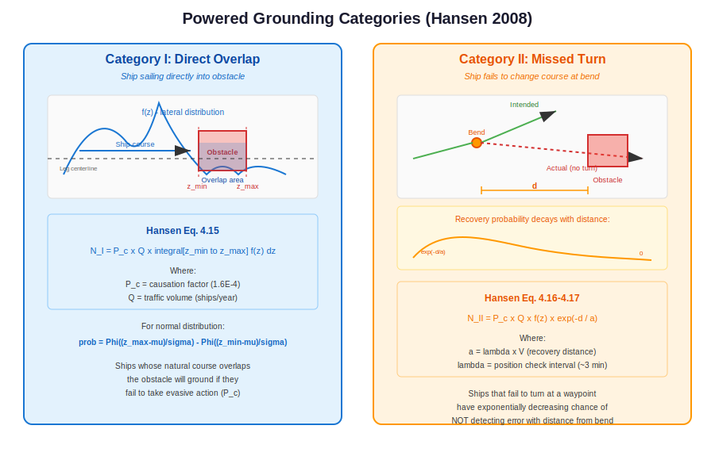

Powered Grounding and Allision¶
This chapter describes OMRAT’s calculations for powered grounding and allision – accidents involving ships that are under power but fail to navigate correctly. Two categories are modelled based on Hansen (2008).
Overview¶
Powered accidents occur when a vessel has operational engines but the crew fails to take appropriate action. This can happen because of:
Navigation errors
Equipment malfunction
Human factors (fatigue, distraction)
Environmental conditions (poor visibility)
Unlike drifting accidents, powered accidents depend on the lateral traffic distribution relative to obstacles and the probability of course correction after an error.
{kind=link}
Grounding pipeline: compute/powered_model.py:28 – run_powered_grounding_model() |
Allision pipeline: compute/powered_model.py:178 – run_powered_allision_model() |
Exponential decay: compute/basic_equations.py:26 – powered_na()
Category I: Direct Overlap¶
Category I covers ships whose natural course (based on their lateral position in the traffic distribution) takes them directly into an obstacle. These ships are sailing on a heading that overlaps with the obstacle, and will ground/collide unless they take evasive action.
Equation (Hansen Eq. 4.15)¶
Where:
\(P_C\) = causation factor (\(1.6 \times 10^{-4}\) for grounding)
\(Q\) = traffic volume (ships/year)
\(f(z)\) = lateral traffic distribution (PDF)
\(z_{\min}, z_{\max}\) = lateral extent of the obstacle
The integral represents the fraction of traffic whose course overlaps the obstacle
For a normal distribution, the integral evaluates to:
Where \(\Phi\) is the standard normal CDF and \(\mu, \sigma\) are the mean and standard deviation of the lateral position distribution.
compute/basic_equations.py:432 – get_powered_grounding_cat1()
"""
return Pc * Q * prob_in_obstacle
Physical Interpretation¶
Category I accidents are “ships sailing into the obstacle”. Even though the ship has power, the crew may not be paying attention, may not see the obstacle (e.g., submerged reef), or may misjudge the ship’s position. The causation factor \(P_C = 1.6 \times 10^{-4}\) means that roughly 1 in 6,000 geometric encounter candidates results in an actual accident.
Category II: Missed Turn at Bend¶
Category II covers ships that fail to change course at a waypoint/bend. The ship continues on its original heading instead of turning, and may collide with an obstacle that lies ahead on the original course.
The probability decreases exponentially with distance from the bend, because the crew has more opportunities to detect and correct the course error the further they travel.
Equation (Hansen Eq. 4.16–4.17)¶
Where:
\(d\) = distance from the bend to the obstacle (metres)
\(a = \lambda \times V\) = recovery distance (metres)
\(\lambda\) = position check interval (minutes, converted to seconds)
\(V\) = ship speed (m/s)
\(f(z)\) = probability density at the lateral position where the original heading leads to the obstacle
compute/basic_equations.py:470 – get_powered_grounding_cat2()
# Calculate recovery distance a = λ × V
recovery_dist = get_recovery_distance(position_check_interval, ship_speed)
# Avoid division by zero
if recovery_dist <= 0:
return 0.0
# Exponential decay: probability of not detecting course error
# before reaching obstacle at distance d
prob_not_recovered = exp(-distance_to_obstacle / recovery_dist)
return Pc * Q * prob_at_position * prob_not_recovered
Recovery Distance¶
The recovery distance \(a\) represents the average distance a ship travels between position checks:
Where \(\lambda_{\text{min}}\) is the position check interval in minutes. A typical value is \(\lambda = 3\) minutes, meaning the navigator checks the ship’s position approximately every 3 minutes.
For a ship travelling at 10 knots (~5.1 m/s):
compute/basic_equations.py:408 – get_recovery_distance()
Exponential Decay¶
The term \(\exp(-d/a)\) represents the probability that the ship has not detected its course error before reaching the obstacle.
At \(d = 0\) (obstacle at bend): \(\exp(0) = 1\) (no time to detect)
At \(d = a\) (one check interval away): \(\exp(-1) \approx 0.37\)
At \(d = 3a\) (three check intervals): \(\exp(-3) \approx 0.05\)
At \(d = 5a\) (five check intervals): \(\exp(-5) \approx 0.007\)
This means obstacles close to bends are much more dangerous than obstacles far from bends, because the crew has less time to detect and correct the error.
Physical Interpretation¶
Category II models the “missed turn” scenario. A ship approaching a waypoint should change course, but some fraction of ships (weighted by \(P_C\)) continue straight. The exponential decay represents the crew’s progressive awareness: at each position check interval, they have a chance to notice they are off course and correct.
Combined Powered Risk¶
The total powered accident frequency for an obstacle is the sum of Category I and Category II contributions from all legs and ship types:
The run_calculations.py module orchestrates this computation,
iterating over all segments, directions, and ship types.
Comparison with Drifting Risk¶
Aspect |
Drifting Risk |
Powered Risk |
|---|---|---|
Ship status |
Engine failure (blackout) |
Under power |
Causation factor |
1.0 (no avoidance possible) |
\(1.6 \times 10^{-4}\) (avoidance likely) |
Direction |
Wind/current driven (8 dirs) |
Along ship’s heading |
Key parameter |
Repair time, wind rose |
Lateral distribution, bend distance |
Spatial model |
Drift corridors |
Distribution overlap / exp decay |
Typical magnitude |
Higher per-event |
Lower per-event, but more frequent |
In practice, powered risks often dominate for obstacles near route centrelines, while drifting risks dominate for obstacles that are off to the side of routes.
Causation Factor Summary¶
Accident Type |
Default \(P_C\) |
Source |
|---|---|---|
Powered grounding |
\(1.6 \times 10^{-4}\) |
IALA / Fujii |
Powered allision |
\(1.9 \times 10^{-4}\) |
Fujii et al. 1974 |
Drifting (all types) |
\(1.0\) |
N/A (powerless) |